记得比较琐碎，以太坊部分待补充完整
BTC-密码学原理
比特币最小单位satoshi
crypto-currency 加密货币
cryptographic hash function 密码哈希函数
哈希函数的性质
- collision resistance 冲突阻碍，指会发生哈希冲突的两个输入难以用某个高效算法找到
由实践经验得出某些哈希函数无法人为制造哈希碰撞，这一点无法在数学上证明
另一些算法，如MD5 已经被破解
brute-force 暴力破解，指用穷举法破解
message digest 信息摘要/指纹，指利用冲突阻碍原理，信息被篡改后哈希值不改变的情况难以找到
- hiding 隐匿性
H(x)难以反推x，只能用暴力破解
条件：x的样本空间足够大且分布均匀
- puzzle friendly
$$
H(block header) <= target
$$
$$
difficulty=\frac{挖矿难度=1,时对应的,target}{当前,target}
$$
$$
target=target\frac{挖出最近,2016,个块的实际时间}{201610min}
$$
target 设定目标，前面都是0，nBits
新的target由上面公式算出，但必须处于在上一个的1/4～4倍之间，超过这个范围按边界值
这一性质说明，完成这个目标，一定是进行了大量的穷举，即 proof of work 工作量证明
difficult to solve, but easy to verify
应用
对于股票预测的提前公布会影响股价，所以要提前一天放到封好的信封里
预测者仅仅提前公布自己的哈希值，第二天收盘时，再公布自己的预测文件
- 预测者无法修改这个文件
- 别人无法提前反推这个文件
问题：股票的输入空间不足，这会导致隐匿性丧失；但预测者的修改还是很难实现
解决：通过拼接随机数(nonce)扩大输入空间
比特币用的哈希算法
SHA-256
Secure Hash Algorithm
签名
如何开帐户？创立公钥私钥对
asymmetric encryption algorithm 非对称加密
加密用公钥，解密用对应的私钥
签名用私钥，验证用公钥
BTC-数据结构
hash pointers
哈希指针：前一个区块的位置+H(前一个区块包含其哈希指针的所有数据) 结构体
genesis block 创世区块
most recent block 最近区块
tamper-evident log 篡改事件日志，指中间任意一个哈希修改都会导致之后所有区块哈希值的改变
Merkle Tree
默克尔树
由每个区块包含的交易构建
merkle proof
block header + block body
block header：
version
hash of previous block header 只取块头哈希
merkle root hash 存储了和当前区块交易所有相关区块的根哈希值
target
nonce
blcok body：
- 交易列表
问题：只保存了header的轻节点如何验证一笔交易是否写入了区块链中？
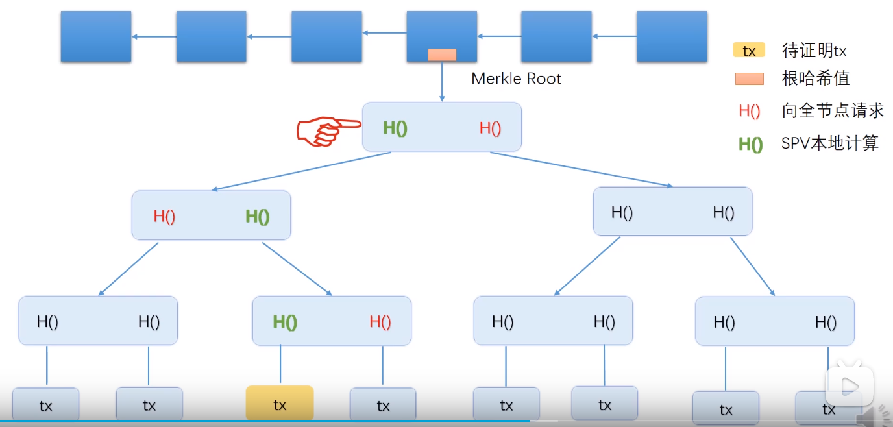
只要验证当前交易所在的分支，就可以证明交易tx的存在，这称之为proof of membership/inclusion
那么如何验证某个交易不存在呢？这需要获取整棵树挨个计算。更好的方案是用叶子结点按哈希值排好序。
全节点和轻节点
fully validationg node
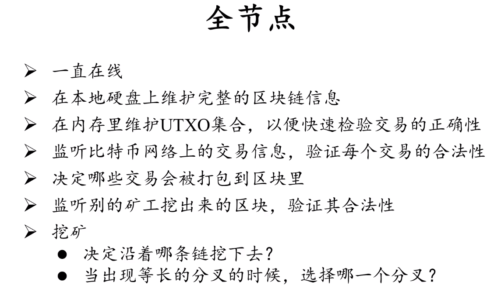
light node
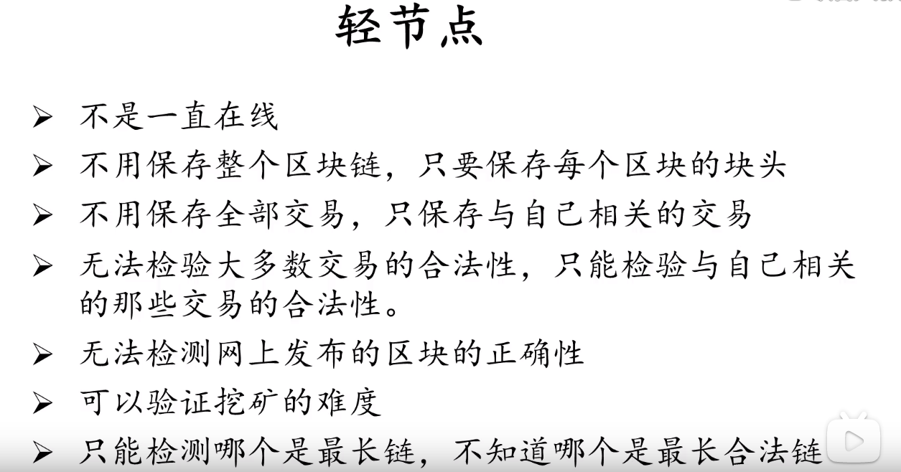
BTC-协议
double spending attack: 一张数字货币很容易通过复制操作变两张
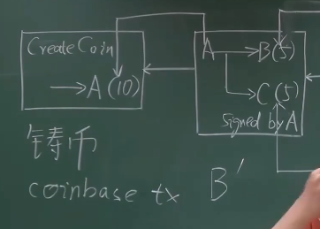
问题：B的同伙B’知道A的公钥/地址，为什么不能冒充A
- 一方面，B’如果用自己的公钥作为输入，并声明这是A的公钥。这一公钥和其来源，即A收款的输出，即A的地址，对不上
- 另一方面，B’如果用A的公钥作为输入，别人会用这个去解密。但你不知道A的私钥，不能用A的私钥签名，别人用A的公钥解密的时候出错
交易的输入：币的来源交易的输出+付款人的公钥
交易的输出：收款人的地址
分布式共识
membership机制：筛选优质会员参与 比如hyperledger 联盟链
如果仅仅采用投票机制，sybil attack 机器产生大量账户投票
- BTC的共识：算出nonce的节点获得记账权
获得记账权的好处：
- 出块奖励 block reward 挖出新区块的将获得铸币
- 帮别人记账的交易费 transaction fee
mining miner
- longest valid chain
BTC-实现
UTXO: unspent TX output
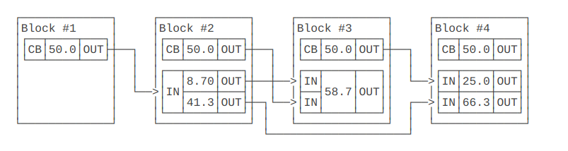
给定任何一个区块，计算当前所有的UXTO金额之和，等同于自创世区块到给定区块的挖矿奖励之和。
在钱包程序中，钱包管理的是一组私钥，对应的是一组公钥和地址。钱包程序必须从创世区块开始扫描每一笔交易，如果：
- 遇到某笔交易的某个Output是钱包管理的地址之一，则钱包余额增加；
- 遇到某笔交易的某个Input是钱包管理的地址之一，则钱包余额减少。
UXTO是存储在本地的，其正确性由遍历整个区块链验证
transaction-based ledger
irrevocable ledger 不可篡改交易
zero-confirmation & six-confirmation
需要回滚某笔交易，在该比交易所在区块的前一个区块开始分叉，只要比原链更长即可
所以电商需要等待六个区块，使得分叉攻击几乎不可能
零确认指的是还未挖出新区块，电商自行验证签名和UXTO后确认收款：
- 比特币网络中诚实的节点只会接收最早的交易
- 发货还需要时间，发现用户回滚交易就不发货。这时候这笔交易后的区块已经很多了
selfish mining
挖出区块但不立刻发布有什么好处？
如果比其他人快一步，别人的算力都浪费在竞争前一个区块上
但如果运气不好被别人赶上了，自己的算力都浪费了
BTC-网络
appication layer: BitCoin Block chain
network layer: P2P Overlay Network
simple, robust, but not efficient
flooding的方式消息传播 best effort
BTC-挖矿
调整nonce 4bytes输入空间不够，可能全部尝试了还是到不了target
所以实际计算还有coinbase交易的coinbase field可以调整，这将影响header里的merkle tree root
问题：矿主是如何避免矿工挖到区块自行发布，同时又获得almost valid block的奖励？
解决：coinbase的收款地址必须是矿主
这保证了挖出来的奖励只能给矿主。如果填自己的那就没人一起挖，就和矿池没关系了。
矿工提交的almost valid block一定是填了矿主的地址。如果他填了自己的地址，也就是不按照矿主发给他的挖，那矿主那边验证不通过，他就拿不到部分奖励。
矿池的优劣
好处：能让矿工的收入稳定
坏处：会导致51%攻击，比如回滚和联合抵制（boycott）
BTC-分叉
state fork: 随时会产生的
- forking attack or deliberate fork
protocol fork: 软件/协议升级产生的
- hard fork: 新版本认可老版本
- 旧节点不更新软件，那么他将永远无法认可新版本的区块，即使含有新版本的链更长。社区会产生分裂，从而产生两种币
- 更新软件的新节点仍然认可老版本的区块，按照最长链原则
- 防范重放攻击，带chain ID
- soft fork： 新版本不兼容老版本
- 新版本节点掌握大多数算力，老版本节点被迫更新
BTC-匿名性 anonymity
pseudonymity 别名
问题：不同的地址如何关联在一起？
一笔交易如果你的某个地址余额不足，可以有多个输入，多个输入是同一个人
一笔交易如果有多个输出，一个是商家收款地址，另一个多出来的找零给自己的新地址
解决：零币和零钞
问题：什么情况能对应现实中的某人？
- 大额兑现法币，或者用法币买入
- 比特币线下支付，消费记录人人可查
silk road 黑店
提高匿名性
应用层:
- coin mixing
网络层:
- TOR 洋葱路由
Zero-knowledge proof
A 向 B 证明一个陈述是正确的，而不必透露正确之外的内容。
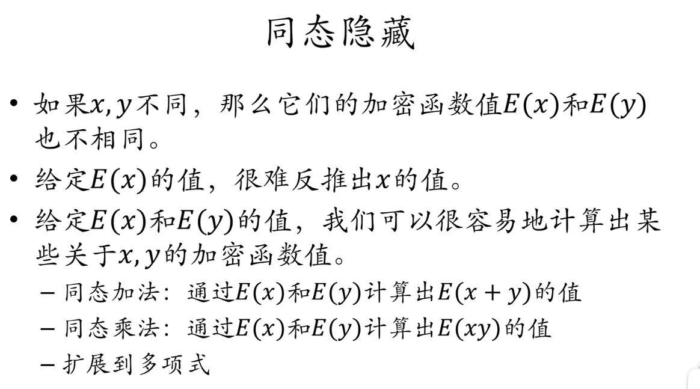
Ethereum 以太坊
ETH最小单位wei
创始人 Vitalik
- 出块时间
- 基于ghost协议的共识机制
- memory hard mining puzzle 计算密集型
- pow -> proof of stake
- 智能合约，记录历史状态，为了支持智能合约的回滚
账户
externally owned account
- balance 余额
- nonce 其实是counter，记录该账户交易次数，用来避免重放攻击
smart contract account
- code
- storage
状态树、交易树、收据树
modified Merkle Patricia trie
recursive length profix
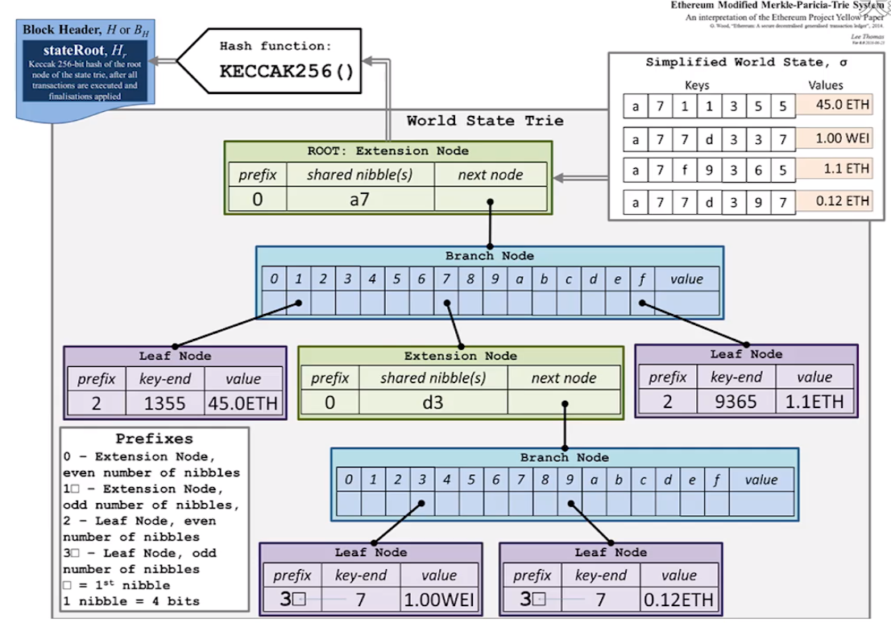
GHOST
叔父区块 7/8*3
叔父区块最多有两个
最长合法链如果包含叔链的交易，那么总共会获得2*1/32*3+3
最多6代 7/8～2/8
权益证明
虚拟挖矿
pow的系统不是一个闭环，刚诞生的会面临AltCoin Infanticide，也就是外界的美元通过挖矿转化成币，从而让这一币种的价格暴跌
pos系统是一个闭环，挖矿难度由持有的币决定
以太坊中准备使用Casper the Friendly Finality Gadget
- 对某个epoch是否是finality用保证金进行两轮投票
- 对验证者进行奖励和处罚，发现对两条链下注的就没收保证金
智能合约
solidity
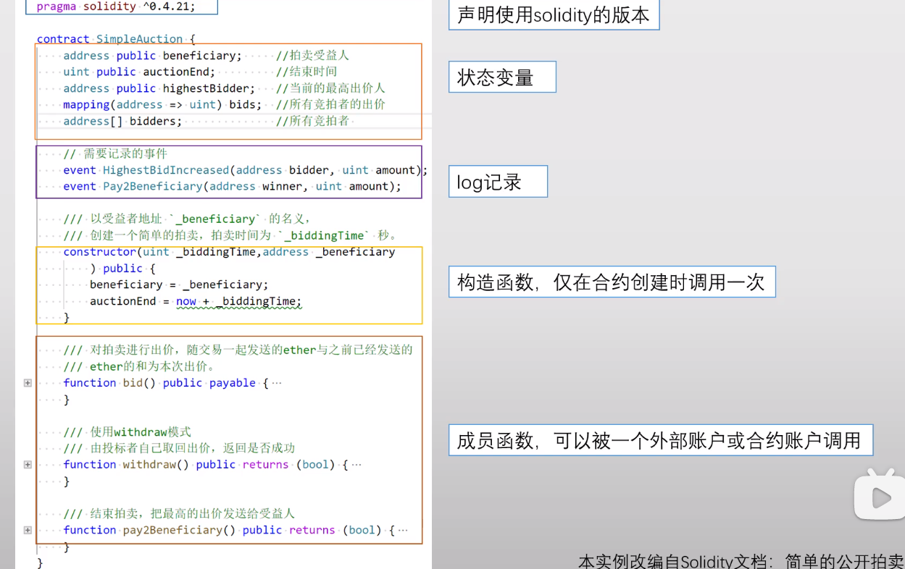
不支持hash表遍历，用一个数组保存
hash表所有值初始为0
不支持多线程
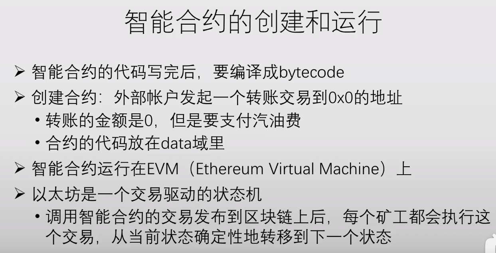
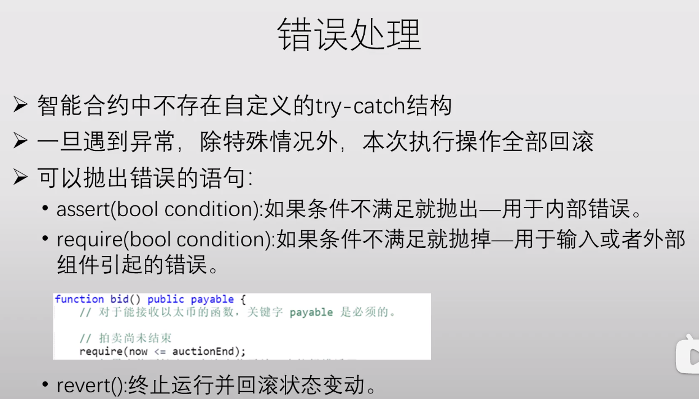
问题：以太坊中所有全节点都要在本地回滚自己的三棵树，并独立验证别人新发布的区块的正确性，这样得不到任何好处。他们不去验证直接认为某个新区块是正确的怎么办？
解决：本地必须保证三棵树的正确性才能继续往下挖，所以一定会更新
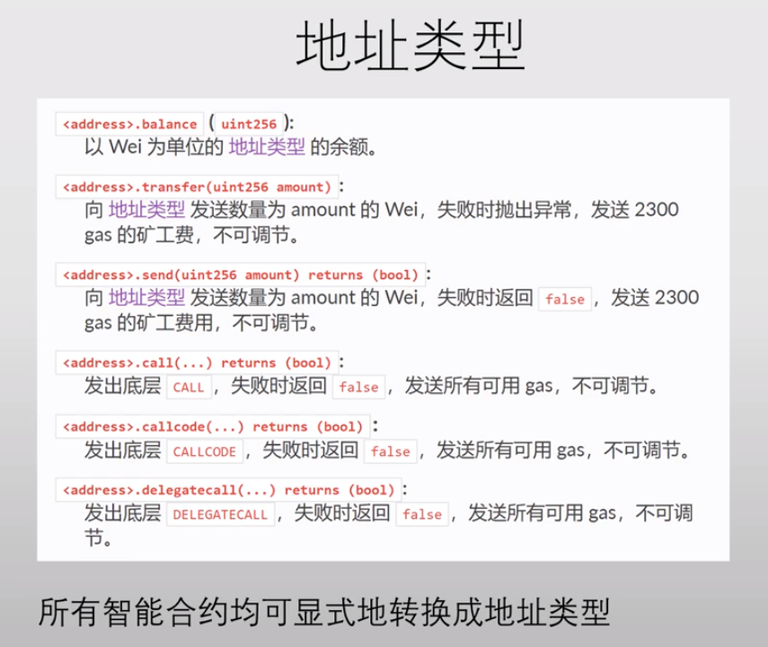
拍卖auction
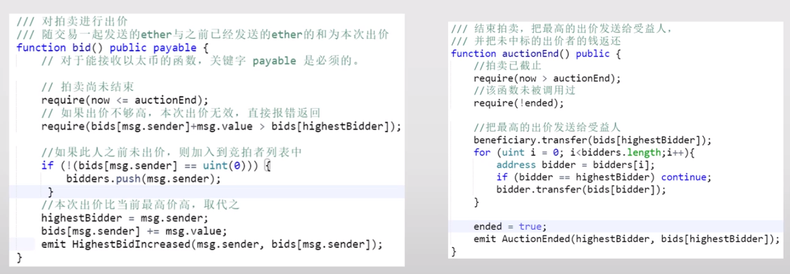
code is law
irrecocable trust 不可撤消的信托
智能合约一定要反复测试再发布
Irrevocability is a double edged sword.
Nothing is irrevocable.
DAO-decentralized autonomous organization
The DAO 众筹的智能合约
too big to fail
硬分叉之后，旧链改名为ETC，新链沿用ETH
反思
Is solidity the right programming language?
formal verification 是否应该研究？能否实现？
专门的模板和编写机构
开源也会存在安全漏洞，many eyeball fallacy 虽然看的人很多，但看懂的很少，都以为别人看过
规则修改用去中心化的方法完成
在互不信任的实体建立共识才需要智能合约，其他分布式场景用不到
应用
不是哪都能用，不应该和已有的支付方式竞争
- Information can flow freely on the Internet, but payment cannot.
- 民主不是最好的方案，只是最不坏的方案